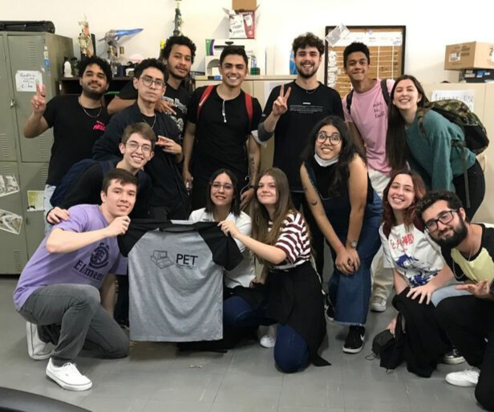
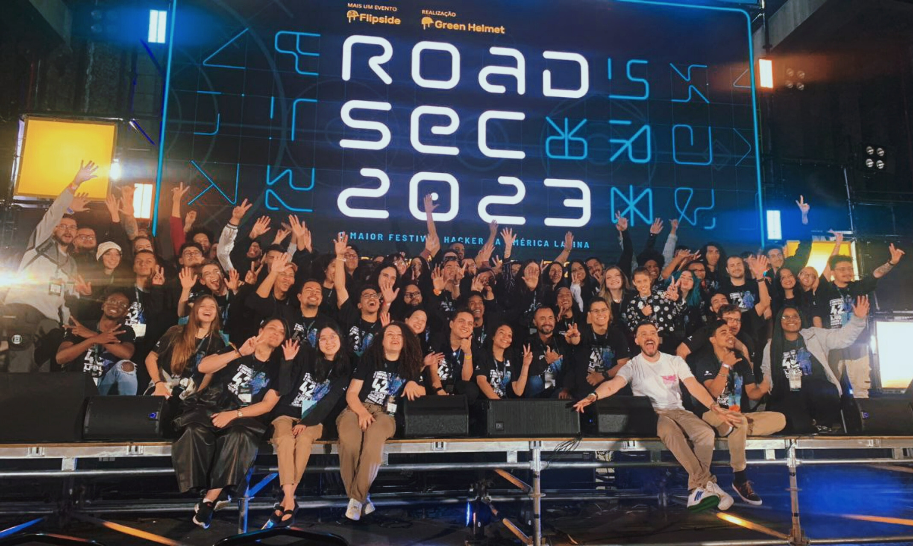

TÉCNICA EM ENGENHARIA DE DADOS | BACHARELADO EM CIÊNCIA DA COMPUTAÇÃO NA UNIVERSIDADE FEDERAL DO PARANÁ (UFPR) EM ANDAMENTO.
Sobre Mim
Projetos
PET Computação
Manutenção da plataforma web do programa e do repositório online de exercícios e provas da UFPR (FAROL), reformulação da identidade visual do programa e sua aplicação em redes sociais, monitoria aos estudantes em processo de aprendizado à linguagem C++ e organização de eventos educativos sobre linguagens de programação e ferramentas computacionais.

Roadie Voluntaria
No ano de 2023 integrei o time de voluntários do maior festival hacker da américa latina (Roadsec). Nesse fui responsável por liderar o palco ataque e coordenar as suas sessões de conteúdo.

Programação Competitiva
Durante os dois anos em que estive na equipe Capimara (Competidores Pirados em Maratona), me dediquei a treinamentos focados nas participações em maratonas de programação competitiva, totalizando duas participações na maratona da Sociedade Brasileira de Computação (SBC) e uma participação na Maratona Feminina de Programação (MFP).